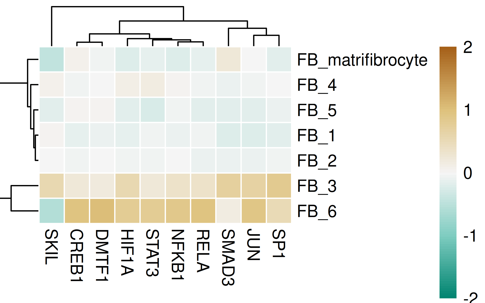
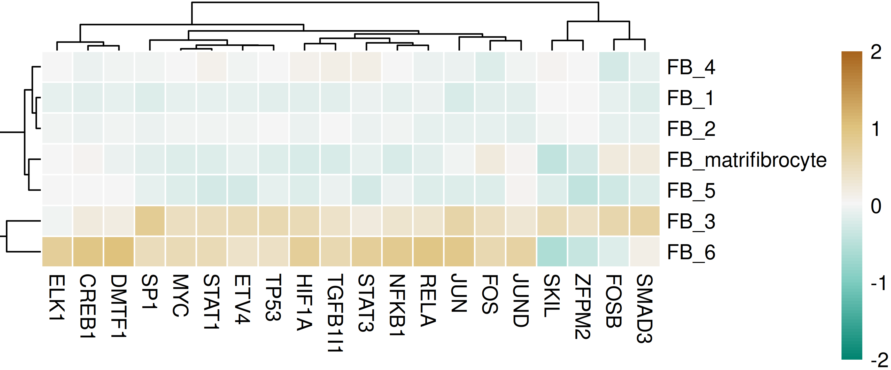
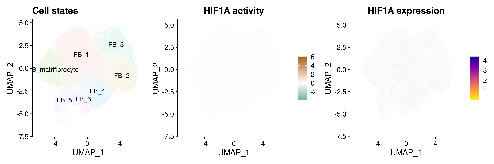
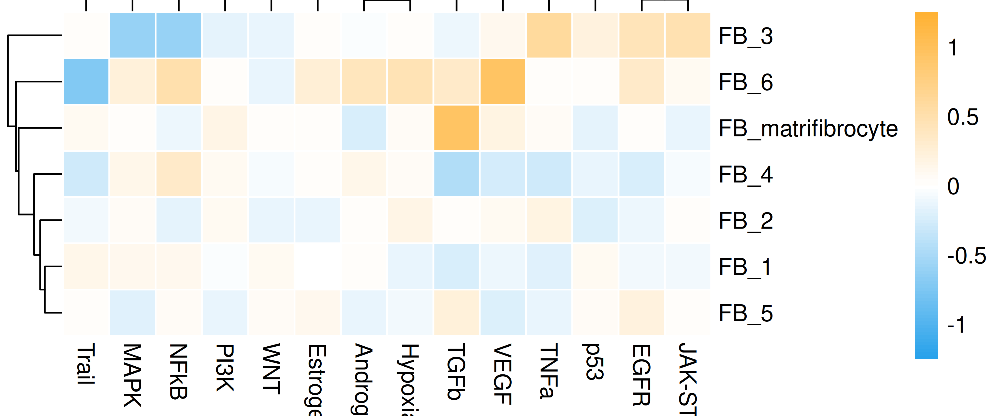
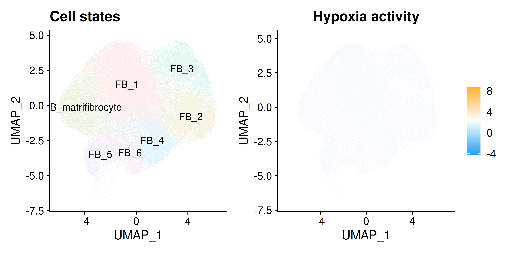

Last updated: 2026-10-19
Checks: 7 0
Knit directory: DCM_snRNAseq/
This reproducible R Markdown analysis was created with workflowr (version 1.7.2). The Checks tab describes the reproducibility checks that were applied when the results were created. The Past versions tab lists the development history.
Great! Since the R Markdown file has been committed to the Git repository, you know the exact version of the code that produced these results.
Great job! The global environment was empty. Objects defined in the global environment can affect the analysis in your R Markdown file in unknown ways. For reproduciblity it’s best to always run the code in an empty environment.
The command set.seed(20240606) was run prior to running
the code in the R Markdown file. Setting a seed ensures that any results
that rely on randomness, e.g. subsampling or permutations, are
reproducible.
Great job! Recording the operating system, R version, and package versions is critical for reproducibility.
Nice! There were no cached chunks for this analysis, so you can be confident that you successfully produced the results during this run.
Great job! Using relative paths to the files within your workflowr project makes it easier to run your code on other machines.
Great! You are using Git for version control. Tracking code development and connecting the code version to the results is critical for reproducibility.
The results in this page were generated with repository version 95ad531. See the Past versions tab to see a history of the changes made to the R Markdown and HTML files.
Note that you need to be careful to ensure that all relevant files for
the analysis have been committed to Git prior to generating the results
(you can use wflow_publish or
wflow_git_commit). workflowr only checks the R Markdown
file, but you know if there are other scripts or data files that it
depends on. Below is the status of the Git repository when the results
were generated:
Ignored files:
Ignored: .Rhistory
Ignored: .Rproj.user/
Ignored: analysis/figure/
Ignored: output/CellChat/
Ignored: output/Cell_cell_communication_Macrophages/
Ignored: output/Chaffin_2022/
Ignored: output/Comparison_RV_bulk_RNAseq/
Ignored: output/Koenig_2022/
Ignored: output/Matrifibrocytes/
Ignored: output/Matrifibrocytes_disease_vs_HC_adj_subsets/
Ignored: output/SSc_PAH/
Untracked files:
Untracked: .Rprofile
Untracked: Chaffin_wilcox.csv
Untracked: GRCh38-2020-A_build/
Untracked: Koenig_wilcox.csv
Untracked: analysis/A_01_Cohort_proteomics_QC_20261013.Rmd
Untracked: analysis/A_02_mPAP_programmes_HC_20261013.Rmd
Untracked: analysis/A_03_Olink_DCM_HC_clinical_20261013.Rmd
Untracked: analysis/A_04_MS_DCM_HC_clinical_20261013.Rmd
Untracked: analysis/A_05_Protein_pathways_20261013.Rmd
Untracked: analysis/A_06_External_RV_comparison_20261013.Rmd
Untracked: analysis/A_07_Protein_robustness_RNA_pairs_20261013.Rmd
Untracked: analysis/A_08_Mechanism_robustness_20261013.Rmd
Untracked: analysis/A_09_Pressure_mechanisms_20261013.Rmd
Untracked: analysis/A_10_Olink_assay_audit_20261013.Rmd
Untracked: analysis/A_11_External_candidate_evidence_20261013.Rmd
Untracked: analysis/A_12_Slice_mechanism_context_20261013.Rmd
Untracked: analysis/A_13_Interim_results_summary_20261013.Rmd
Untracked: analysis/A_14_Pressure_gene_drivers_20261013.Rmd
Untracked: analysis/A_15_Cell_state_mechanisms_20261013.Rmd
Untracked: analysis/A_16_Regulatory_and_signalling_context_20261013.Rmd
Untracked: analysis/A_17_Mechanism_expression_atlas_20261013.Rmd
Untracked: analysis/A_18_Clinical_pressure_components_20261013.Rmd
Untracked: analysis/A_19_Protein_turnover_evidence_20261013.Rmd
Untracked: analysis/A_20_Detailed_RV_results_20261013.Rmd
Untracked: analysis/A_21_Functional_candidate_audit_20261014.Rmd
Untracked: analysis/A_22_Experimental_proposals_20261014.Rmd
Untracked: analysis/A_23_External_cohort_intake_20261014.Rmd
Untracked: analysis/A_24_External_nuclei_pseudobulk_20261014.Rmd
Untracked: analysis/A_25_External_bulk_pressure_function_20261014.Rmd
Untracked: analysis/A_26_External_mPAP_signature_validation_20261014.Rmd
Untracked: analysis/A_27_Strict_pressure_disease_candidates_20261014.Rmd
Untracked: analysis/A_28_External_nucleus_gene_models_20261014.Rmd
Untracked: analysis/A_29_Candidate_external_validation_20261014.Rmd
Untracked: analysis/A_30_External_pressure_model_sensitivity_20261014.Rmd
Untracked: analysis/A_31_Pressure_adaptation_evidence_20261014.Rmd
Untracked: analysis/A_32_External_deposited_model_audit_20261014.Rmd
Untracked: analysis/A_33_Male_external_DCM_validation_20261014.Rmd
Untracked: analysis/A_34_Candidate_protein_evidence_20261014.Rmd
Untracked: analysis/A_35_Direct_all_nucleus_bulk_mPAP_logFC_20261014.Rmd
Untracked: analysis/A_36_Disease_pressure_volcano_plots_20261014.Rmd
Untracked: analysis/A_37_mPAP_above35_comparison_20261014.Rmd
Untracked: analysis/A_38_External_RAP_age_differential_expression_20261014.Rmd
Untracked: analysis/A_39_Manuscript_Fig3E_TGFbeta_validation_20261014.Rmd
Untracked: analysis/A_40_Chaffin_intake_20261015.Rmd
Untracked: analysis/A_40_Koenig_intake_20261015.Rmd
Untracked: analysis/A_40_Our_intake_20261015.Rmd
Untracked: analysis/A_40_Reichart_intake_20261015.Rmd
Untracked: analysis/A_41_Resources_20261015.Rmd
Untracked: analysis/A_42_Chaffin_LV_DCM_HC_20261015.Rmd
Untracked: analysis/A_42_Koenig_LV_DCM_HC_20261015.Rmd
Untracked: analysis/A_42_Kuznetsov_RV_DCM_HC_20261015.Rmd
Untracked: analysis/A_42_Kuznetsov_bulk_RV_DCM_HC_20261015.Rmd
Untracked: analysis/A_42_Our_RV_DCM_HC_20261015.Rmd
Untracked: analysis/A_42_Reichart_LV_DCM_HC_20261015.Rmd
Untracked: analysis/A_42_Reichart_RV_DCM_HC_20261015.Rmd
Untracked: analysis/A_43_Paired_Reichart_chamber_tests_20261015.Rmd
Untracked: analysis/A_44_Combined_pseudobulk_models_20261015.Rmd
Untracked: analysis/A_45_Independent_cohort_meta_analysis_20261015.Rmd
Untracked: analysis/A_46_Protein_RNA_pathway_agreement_20261015.Rmd
Untracked: analysis/A_47_RV_LV_summary_20261015.Rmd
Untracked: analysis/A_48_Our_RV_age_sensitivity_20261015.Rmd
Untracked: analysis/A_49_Analysis_checks_20261015.Rmd
Untracked: analysis/A_50_TF_target_protein_agreement_20261015.Rmd
Untracked: analysis/A_Cardiomyocytes_subclustering_20261012.Rmd
Untracked: analysis/A_Cell_cycle_DCM_vs_HC_20261012.Rmd
Untracked: analysis/A_Combined_cell_states_20261012.Rmd
Untracked: analysis/A_DA_DE_cell_state_DCM_vs_HC_20261012.Rmd
Untracked: analysis/A_DA_DE_cell_type_DCM_vs_HC_20261012.Rmd
Untracked: analysis/A_DCM_intake_20261008.Rmd
Untracked: analysis/A_DCM_protocol_20261008.md
Untracked: analysis/A_DCM_results_20261009.md
Untracked: analysis/A_Endothelial_cells_subclustering_20261012.Rmd
Untracked: analysis/A_Fibroblasts_subclustering_20261012.Rmd
Untracked: analysis/A_GSEA_cell_state_DCM_vs_HC_20261012.Rmd
Untracked: analysis/A_GSEA_cell_type_DCM_vs_HC_20261012.Rmd
Untracked: analysis/A_Lymphocytes_subclustering_20261012.Rmd
Untracked: analysis/A_Macrophages_subclustering_20261012.Rmd
Untracked: analysis/A_MultiNicheNet_cell_state_DCM_vs_HC_20261012.Rmd
Untracked: analysis/A_MultiNicheNet_cell_type_DCM_vs_HC_20261012.Rmd
Untracked: analysis/A_Mural_cells_subclustering_20261012.Rmd
Untracked: analysis/A_Overview_DCM_vs_HC_20261012.Rmd
Untracked: analysis/A_QC_integration_annotation_HC_DCM_20261012.Rmd
Untracked: analysis/A_Reference_resources_20261012.Rmd
Untracked: analysis/A_Selected_paper_markers_DCM_vs_HC_20261012.Rmd
Untracked: analysis/A_TF_Pathway_Cardiomyocytes_20261012.Rmd
Untracked: analysis/A_TF_Pathway_Endothelial_cells_20261012.Rmd
Untracked: analysis/A_TF_Pathway_Fibroblasts_20261012.Rmd
Untracked: analysis/A_TF_Pathway_Lymphocytes_20261012.Rmd
Untracked: analysis/A_TF_Pathway_Macrophages_20261012.Rmd
Untracked: analysis/A_TF_Pathway_Mural_cells_20261012.Rmd
Untracked: analysis/A_TF_Pathway_Other_20261012.Rmd
Untracked: analysis/Amrute_2024_fibroblast_integration.Rmd
Untracked: analysis/Amrute_2024_fibroblast_pseudobulk.Rmd
Untracked: analysis/Chaffin_2022.Rmd
Untracked: analysis/Check_IMC_panel.Rmd
Untracked: analysis/Comparison_RV_bulk_RNAseq.Rmd
Untracked: analysis/DE_Group_all_cell_types.Rmd
Untracked: analysis/EC_capillary_angiogenic_boxplot_stats.csv
Untracked: analysis/Endothelial_cells_SGLT2_I.Rmd
Untracked: analysis/Endothelial_integration_QC_figures.Rmd
Untracked: analysis/Fibroblasts_DA_DE_26.Rmd
Untracked: analysis/Genes_Luxembourg.Rmd
Untracked: analysis/HC_DEGs_clustering.Rmd
Untracked: analysis/Koenig_2022.Rmd
Untracked: analysis/MXRA5_coexpression.Rmd
Untracked: analysis/Mass_Spec_RV_dysf.Rmd
Untracked: analysis/Mass_Spec_proteomics.Rmd
Untracked: analysis/Mass_Spec_proteomics_2.Rmd
Untracked: analysis/Mass_Spec_proteomics_3.Rmd
Untracked: analysis/Matrifibrocytes.Rmd
Untracked: analysis/Matrifibrocytes_2.Rmd
Untracked: analysis/Matrifibrocytes_3.Rmd
Untracked: analysis/Matrifibrocytes_disease_vs_HC.Rmd
Untracked: analysis/Matrifibrocytes_disease_vs_HC_adj.Rmd
Untracked: analysis/Matrifibrocytes_disease_vs_HC_adj_subsets.Rmd
Untracked: analysis/Matrifibrocytes_high_score_populations_disease_vs_HC_adj.Rmd
Untracked: analysis/Olink_RV_dysf.Rmd
Untracked: analysis/Olink_SSc_PAH.Rmd
Untracked: analysis/Olink_SSc_PAH_draft.Rmd
Untracked: analysis/Olink_proteomics_2.Rmd
Untracked: analysis/Proteomics_OLINK_MS.Rmd
Untracked: analysis/Proteomics_combined.Rmd
Untracked: analysis/Proteomics_combined_2.Rmd
Untracked: analysis/Pseudobulk_all.csv
Untracked: analysis/Pseudobulk_all_2.csv
Untracked: analysis/Pseudobulk_byCellType_facetGrid.pdf
Untracked: analysis/Pseudobulk_byCellType_filtered_wrap3col.pdf
Untracked: analysis/Pseudobulk_byCellType_filtered_wrap3col_proportional.pdf
Untracked: analysis/Pseudobulk_byCellType_wilcox.csv
Untracked: analysis/Pseudobulk_byCellType_wilcox.filtered.csv
Untracked: analysis/Pseudobulk_byCellType_wilcox_2.csv
Untracked: analysis/QC_integration_annotation_HC.Rmd
Untracked: analysis/Reichart_ncRNA.Rmd
Untracked: analysis/Reichart_wilcox.csv
Untracked: analysis/Selection_genes_histology.Rmd
Untracked: analysis/TAPSE_sPAP_concordance_3datasets.Rmd
Untracked: analysis/TF_activity_program_score_correlations_by_sample.csv
Untracked: analysis/TF_activity_program_scores_by_sample_cell_state.csv
Untracked: analysis/TOM/
Untracked: analysis/UntitledR.R
Untracked: analysis/ec_Reichart_logCPM.csv
Untracked: analysis/mPAP_concordance_3datasets.Rmd
Untracked: analysis/omnipathr-log/
Untracked: analysis/prot_test.Rmd
Untracked: analysis/test_1.Rmd
Untracked: analysis/test_fb_prot.Rmd
Untracked: code/A_Chambers_20261015/
Untracked: code/A_DCM_reanalysis_20261008/
Untracked: code/A_External_RV_20261014/
Untracked: code/A_HC_DCM_20261012/
Untracked: code/A_HC_QC_20261012/
Untracked: code/A_Novelty_20261013/
Untracked: code/Add_metadata.R
Untracked: code/Check DYSF.R
Untracked: code/Clustering_genes.R
Untracked: code/DE_5_percent.Rmd
Untracked: code/DE_5_percent.html
Untracked: code/DE_5_percent/
Untracked: code/DE_CM_test1.R
Untracked: code/DE_no_401.Rmd
Untracked: code/DE_no_401.html
Untracked: code/DE_no_401/
Untracked: code/Differential abundance test1.R
Untracked: code/Differential_Expression_edgeR_All.Rmd
Untracked: code/Differential_Expression_edgeR_All_2.Rmd
Untracked: code/Differential_Expression_edgeR_All_2.html
Untracked: code/Differential_Expression_edgeR_All_Age.Rmd
Untracked: code/Differential_Expression_edgeR_All_Age_2.Rmd
Untracked: code/Differential_Expression_edgeR_All_Age_2.html
Untracked: code/Differential_Expression_edgeR_All_groups.Rmd
Untracked: code/Differential_Expression_edgeR_All_groups.html
Untracked: code/Differential_Expression_edgeR_All_groups_2.Rmd
Untracked: code/Differential_Expression_edgeR_All_groups_2.html
Untracked: code/Differential_Expression_edgeR_All_groups_3.Rmd
Untracked: code/Differential_Expression_edgeR_All_groups_3.html
Untracked: code/Endothelial_cells_cubclustering_removed.Rmd
Untracked: code/PCA and CCA analysis test.R
Untracked: code/Pseudobulk DCM HC.R
Untracked: code/Published_heart_datasets_RV_vs_LV.Rmd
Untracked: code/QC_integration_annotation_orig.Rmd
Untracked: code/Removed_chunks.Rmd
Untracked: code/UpSet_plot_DEGs.Rmd
Untracked: code/Volcano_highlighted_genes.R
Untracked: code/ezInteractiveTable.Rmd
Untracked: code/ezInteractiveTable.html
Untracked: code/old.R
Untracked: data/Baza_dla_Gino_AP.xlsx
Untracked: data/Baza_dla_Gino_AP_2.xlsx
Untracked: data/Baza_dla_Gino_AP_short.xlsx
Untracked: data/Cellbender_output/
Untracked: data/Cellranger_output/
Untracked: data/DCM_Clinical_data_22.xlsx
Untracked: data/DCM_Clinical_data_26.xlsx
Untracked: data/DCM_Clinical_data_30.xlsx
Untracked: data/DCM_Clinical_data_30_261012.xlsx
Untracked: data/DCM_Clinical_data_83.xlsx
Untracked: data/HMEC_RNAseq/
Untracked: data/Heart_datasets/
Untracked: data/Heart_specific_proteome.xlsx
Untracked: data/Homo_sapiens.GRCh38.93.gtf
Untracked: data/Human_plasma_proteome.xlsx
Untracked: data/Mass_spec/
Untracked: data/Massons_quantification.xlsx
Untracked: data/OLINK/
Untracked: data/OLINK_LVAD/
Untracked: data/Published_datasets/
Untracked: data/Raw/
Untracked: data/SSc-PAH/
Untracked: data/gencode.v46.chr_patch_hapl_scaff.annotation.gtf
Untracked: data/gencode.v46.chr_patch_hapl_scaff.basic.annotation.gtf
Untracked: data/refdata-gex-GRCh38-2020-A/
Untracked: omnipathr-log/
Untracked: output/A_Chambers_20261015/
Untracked: output/A_DCM_reanalysis_20261008/
Untracked: output/A_External_RV_20261014/
Untracked: output/A_HC_DCM_20261012/
Untracked: output/A_HC_QC_20261012/
Untracked: output/A_Novelty_20261013/
Untracked: output/A_mPAP_GSEA_20261009/
Untracked: output/A_mPAP_PCA_20261009/
Untracked: output/A_mPAP_age_20261009/
Untracked: output/A_mPAP_leave_batch_20261009/
Untracked: output/Add_cell_states_remove_contamination/
Untracked: output/Amrute_2024_fibroblast_integration/
Untracked: output/Amrute_2024_fibroblast_pseudobulk/
Untracked: output/Amrute_2024_matrifibrocyte_markers/
Untracked: output/Biomarkers_selection/
Untracked: output/CM_lncRNAs/
Untracked: output/CM_lncRNAs_2/
Untracked: output/Cardiomyocytes_DA_DE/
Untracked: output/Cardiomyocytes_subclustering/
Untracked: output/Cardiomyocytes_subclustering_26/
Untracked: output/Cell_cell_communication/
Untracked: output/Cell_cell_communication_LV/
Untracked: output/Cell_cell_communication_LV2/
Untracked: output/Cell_cycle/
Untracked: output/Check_IMC_panel/
Untracked: output/Comparison_LV/
Untracked: output/DA_DE_all_cell_types_and_parameters/
Untracked: output/DE_Fibrosis_all_cell_types/
Untracked: output/DE_Fibrosis_fibroblasts/
Untracked: output/DE_Group_all_cell_types/
Untracked: output/DE_all_cell_types_mPAP/
Untracked: output/DE_mPAP_all_cell_types/
Untracked: output/Differential_expression_edgeR_All/
Untracked: output/Differential_expression_edgeR_All_Age/
Untracked: output/Dysferlin/
Untracked: output/Endothelial_cells_Koenig_Reichart/
Untracked: output/Endothelial_cells_Koenig_Reichart_manuscript/
Untracked: output/Endothelial_cells_SGLT2_I/
Untracked: output/Endothelial_cells_published_datasets/
Untracked: output/Endothelial_cells_subclustering/
Untracked: output/Fibroblasts_DA_DE_26/
Untracked: output/Fibroblasts_subclustering/
Untracked: output/Figures_manuscript/
Untracked: output/Genes_Luxembourg/
Untracked: output/Genes_Luxembourg_2/
Untracked: output/HC_DEGs_clustering/
Untracked: output/HMEC/
Untracked: output/HMEC_second_run/
Untracked: output/HMEC_second_run_manuscript/
Untracked: output/LVAD_OLINK/
Untracked: output/LV_Klaudia/
Untracked: output/LV_datasets_DCM_vs_HC/
Untracked: output/Lymphocytes_subclustering/
Untracked: output/MOFA_integrative_analysis/
Untracked: output/MOFA_integrative_analysis_v2/
Untracked: output/MOFA_integrative_analysis_v3/
Untracked: output/MOFA_integrative_analysis_v4/
Untracked: output/MOFA_integrative_analysis_v6/
Untracked: output/MS_proteomics/
Untracked: output/MXRA5_coexpression/
Untracked: output/MXRA5_fibroblasts/
Untracked: output/Macrophages_subclustering/
Untracked: output/Mass_Spec_RV_dysf/
Untracked: output/Mass_Spec_proteomics/
Untracked: output/Mass_Spec_proteomics_2/
Untracked: output/Mass_Spec_proteomics_3/
Untracked: output/Matrifibrocytes_1/
Untracked: output/Matrifibrocytes_2/
Untracked: output/Matrifibrocytes_2_adjusted/
Untracked: output/Matrifibrocytes_disease_vs_HC/
Untracked: output/Matrifibrocytes_disease_vs_HC_adj/
Untracked: output/Matrifibrocytes_high_score_populations_disease_vs_HC_adj/
Untracked: output/Matrifibrocytes_integration/
Untracked: output/Matrifibrocytes_subclusters_disease_vs_HC_adj/
Untracked: output/Mural_cells_subclustering/
Untracked: output/Olink_RV_dysf/
Untracked: output/Olink_SSc_PAH/
Untracked: output/Olink_SSc_PAH_draft/
Untracked: output/Olink_proteomics/
Untracked: output/Olink_proteomics_2/
Untracked: output/Proteomics_FB_state_PCA/
Untracked: output/Proteomics_PCA_cell_state_composition/
Untracked: output/Proteomics_combined/
Untracked: output/Proteomics_combined_2/
Untracked: output/Proteomics_combined_3/
Untracked: output/Proteomics_combined_4/
Untracked: output/Proteomics_combined_final/
Untracked: output/Proteomics_combined_final_males_only/
Untracked: output/Proteomics_combined_final_males_only_no_PK259/
Untracked: output/Proteomics_combined_final_males_only_no_batch2/
Untracked: output/Proteomics_differential_abundance/
Untracked: output/Proteomics_differential_abundance_v2/
Untracked: output/Proteomics_differential_abundance_v3/
Untracked: output/Proteomics_differential_abundance_v4/
Untracked: output/Proteomics_differential_abundance_v6/
Untracked: output/Proteomics_matched_PCA_multicell_states_v2/
Untracked: output/Proteomics_quality_control/
Untracked: output/Proteomics_quality_control_v2/
Untracked: output/Proteomics_quality_control_v3/
Untracked: output/Proteomics_quality_control_v4/
Untracked: output/Proteomics_quality_control_v6/
Untracked: output/QC_integration_annotation/
Untracked: output/QC_integration_annotation_HC/
Untracked: output/Reichart2022_ventricle_specificity_noncoding/
Untracked: output/Reichart_DE_DCMvsHC/
Untracked: output/Selection_genes_histology/
Untracked: output/TAPSE_sPAP_concordance_3datasets/
Untracked: output/TAPSE_sPAP_proteomics_snrna/
Untracked: output/UntitledR.R
Untracked: output/Variance_partitioning/
Untracked: output/mPAP_concordance_3datasets/
Untracked: redsfewfref.R
Untracked: reference_sources/
Untracked: renv.lock
Untracked: renv/
Untracked: wflow_publish.log
Unstaged changes:
Modified: analysis/Amrute_2024_matrifibrocyte_markers.Rmd
Modified: analysis/CM_lncRNAs.Rmd
Modified: analysis/Cardiomyocytes_DA_DE.Rmd
Modified: analysis/Cell_cycle.Rmd
Modified: analysis/Comparison_LV.Rmd
Modified: analysis/DE_Fibrosis_all_cell_types.Rmd
Deleted: analysis/Differential_Expression_edgeR_All.Rmd
Deleted: analysis/Differential_Expression_edgeR_All_Age.Rmd
Modified: analysis/Endothelial_cells_Koenig_Reichart_manuscript.Rmd
Modified: analysis/Endothelial_cells_published_datasets.rmd
Modified: analysis/Figures_manuscript.Rmd
Modified: analysis/HMEC.Rmd
Modified: analysis/HMEC_second_run_manuscript.Rmd
Modified: analysis/LV_Klaudia.Rmd
Modified: analysis/MOFA_integrative_analysis_v6.Rmd
Modified: analysis/Olink_proteomics.Rmd
Modified: analysis/Proteomics_PCA_cell_state_composition.Rmd
Modified: analysis/Proteomics_combined_final.Rmd
Modified: analysis/Reichart_DE_DCMvsHC.Rmd
Modified: analysis/SSc_PAH.Rmd
Modified: analysis/_site.yml
Note that any generated files, e.g. HTML, png, CSS, etc., are not included in this status report because it is ok for generated content to have uncommitted changes.
These are the previous versions of the repository in which changes were
made to the R Markdown (analysis/MXRA5_fibroblasts.Rmd) and
HTML (docs/MXRA5_fibroblasts.html) files. If you’ve
configured a remote Git repository (see ?wflow_git_remote),
click on the hyperlinks in the table below to view the files as they
were in that past version.
| File | Version | Author | Date | Message |
|---|---|---|---|---|
| Rmd | 95ad531 | GinoBonazza | 2026-10-19 | MXRA5 fibroblast analysis |
| Rmd | 305b6a2 | GinoBonazza | 2026-10-19 | MXRA5 fibroblast analysis |
Setup
current_file <- "MXRA5_fibroblasts"
library(here)
library(readxl)
library(Seurat)
library(DropletUtils)
library(Matrix)
library(scCustomize)
library(dplyr)
library(ggplot2)
library(tidyr)
library(stringr)
library(tibble)
library(patchwork)
library(edgeR)
library(limma)
library(EnhancedVolcano)
library(clusterProfiler)
library(org.Hs.eg.db)
library(enrichplot)
library(ComplexHeatmap)
library(circlize)
library(RColorBrewer)
library(ggpubr)
library(reactable)
library(scales)
library(cowplot)
library(speckle)
library(broom)
library(harmony)
library(clustree)
library(qs2)
library(decoupleR)
library(OmnipathR)
library(dorothea)
library(pheatmap)
output_dir_data <- here::here("output", current_file)
if (!dir.exists(output_dir_data)) dir.create(output_dir_data, recursive = TRUE)
if (!dir.exists(here::here("docs", "figure"))) dir.create(here::here("docs", "figure"), recursive = TRUE)
output_dir_figs <- here::here("docs", "figure", paste0(current_file, ".Rmd"))
if (!dir.exists(output_dir_figs)) dir.create(output_dir_figs, recursive = TRUE)
fb_dir <- here::here("output", "Matrifibrocytes_integration")
cell_type_cols <- c(
"#d05050", "#33A02C", "#1F78B4", "#CAB2D6", "#FF7F00", "#B2DF8A",
"#B15928", "#FFD000", "#FA95C0", "#FDBF6F", "#6A3D9A", "#7aCDF9", "#E6E600",
"#8DD3C7", "#FB8072", "#80B1D3", "#BC80BD", "#CCEBC5", "#FFED6F",
"#A6CEE3", "#F781BF"
)
group_cols <- c("HC" = "grey85", "DCM" = "#A63A2A", "NICM" = "#33A02C", "MI" = "#004C8C")
dataset_cols <- c(
"Koenig" = "#CAB2D6",
"Reichart" = "#B2DF8A",
"Chaffin" = "#FDBF6F",
"Amrute" = "#FA95C0",
"Kuppe" = "#7aCDF9"
)
matrifibrocyte_genes <- c("COMP", "CILP", "CHAD", "THBS4")
activation_genes <- c(
"COMP", "CILP", "CHAD", "THBS4",
"MXRA5", "ACTA2", "POSTN", "FAP",
"COL1A1", "COL3A1", "FN1", "CTHRC1"
)
cell_state_levels <- c("FB_1", "FB_2", "FB_matrifibrocyte", "FB_3", "FB_4", "FB_5", "FB_6")
dataset_levels <- c("Koenig", "Reichart", "Chaffin", "Amrute", "Kuppe")
group_levels <- c("HC", "DCM", "NICM", "MI")
dcm_datasets <- c("Koenig", "Reichart", "Chaffin")
min_pb_libsize <- 10000
min_fibroblast_cells <- 100
min_fibroblast_cells_subcluster <- 20Load integrated fibroblast object
FB_combined <- qs_read(
file = here::here(fb_dir, "FB_combined.qs2"),
nthreads = 32
)
FB_combined$Dataset <- factor(as.character(FB_combined$Dataset), levels = dataset_levels)
FB_combined$Group <- factor(as.character(FB_combined$Group), levels = group_levels)
FB_combined$cell_state <- factor(as.character(FB_combined$cell_state), levels = cell_state_levels)
FB_combined$Disease_status <- ifelse(FB_combined$Group == "HC", "HC", "Disease")
FB_combined$Disease_status <- factor(FB_combined$Disease_status, levels = c("HC", "Disease"))
Idents(FB_combined) <- FB_combined$cell_stateDataset summary
sample_summary <- FB_combined@meta.data %>%
dplyr::select(Dataset, Group, Sample) %>%
dplyr::distinct() %>%
dplyr::count(Dataset, Group, name = "n_samples")
cell_summary <- FB_combined@meta.data %>%
dplyr::count(Dataset, Group, name = "n_cells")
dataset_summary <- dplyr::left_join(
sample_summary,
cell_summary,
by = c("Dataset", "Group")
)
dataset_summary %>%
dplyr::arrange(Dataset, Group) %>%
reactable::reactable()FB_combined@meta.data %>%
dplyr::count(Dataset, Group, Sample, sort = TRUE) %>%
reactable::reactable()UMAP
p <- DimPlot(
FB_combined,
group.by = "cell_state",
reduction = "umap",
cols = cell_type_cols,
label = FALSE,
shuffle = TRUE,
raster = FALSE,
pt.size = 0.1
) +
NoLegend() +
theme(
axis.text = element_text(size = 8, face = "bold"),
axis.title = element_text(size = 12, face = "bold"),
plot.title = element_blank()
)
LabelClusters(
p,
id = "cell_state",
fontface = "bold",
size = 5,
repel = TRUE
)
p1 <- DimPlot(
FB_combined,
reduction = "umap",
group.by = "Dataset",
cols = dataset_cols,
shuffle = TRUE,
raster = FALSE,
pt.size = 0.1
) +
ggtitle("Dataset") +
theme(
axis.text = element_text(size = 8, face = "bold"),
axis.title = element_text(size = 12, face = "bold"),
plot.title = element_text(size = 14, face = "bold", hjust = 0.5)
)
p2 <- DimPlot(
FB_combined,
reduction = "umap",
group.by = "Group",
cols = group_cols,
shuffle = TRUE,
raster = FALSE,
pt.size = 0.1
) +
ggtitle("Group") +
theme(
axis.text = element_text(size = 8, face = "bold"),
axis.title = element_text(size = 12, face = "bold"),
plot.title = element_text(size = 14, face = "bold", hjust = 0.5)
)
p1 | p2
Cluster markers
DefaultAssay(FB_combined) <- "RNA"
FB_combined <- NormalizeData(FB_combined)
Idents(FB_combined) <- "cell_state"
FB_markers_combined <- FindAllMarkers(
FB_combined,
assay = "RNA",
only.pos = TRUE,
min.pct = 0.1,
logfc.threshold = 0.25,
return.thresh = 0.05
)
FB_markers_combined <- FB_markers_combined %>%
dplyr::arrange(cluster, desc(avg_log2FC))
FB_markers_top10_combined <- FB_markers_combined %>%
dplyr::group_by(cluster) %>%
dplyr::slice_max(order_by = avg_log2FC, n = 10, with_ties = FALSE) %>%
dplyr::ungroup()
FB_markers_top3_combined <- FB_markers_combined %>%
dplyr::group_by(cluster) %>%
dplyr::slice_max(order_by = avg_log2FC, n = 3, with_ties = FALSE) %>%
dplyr::ungroup()
FB_markers_combined %>%
dplyr::group_by(cluster) %>%
dplyr::slice_head(n = 20) %>%
reactable::reactable()write.csv(
FB_markers_combined,
here::here(output_dir_data, "FB_markers_combined_all_cell_state.csv"),
row.names = FALSE
)
write.csv(
FB_markers_top10_combined,
here::here(output_dir_data, "FB_markers_combined_top10_cell_state.csv"),
row.names = FALSE
)
write.csv(
FB_markers_top3_combined,
here::here(output_dir_data, "FB_markers_combined_top3_cell_state.csv"),
row.names = FALSE
)id_backup <- Idents(FB_combined)
Idents(FB_combined) <- factor(Idents(FB_combined), levels = rev(levels(Idents(FB_combined))))
p_dot <- DotPlot_scCustom(
FB_combined,
features = unique(FB_markers_top3_combined$gene),
x_lab_rotate = TRUE
)
p_dot + theme(
axis.text.x = element_text(size = 11, angle = 60, vjust = 1, hjust = 1),
axis.text.y = element_text(size = 12)
)
Idents(FB_combined) <- id_backupFibroblast activation markers
DefaultAssay(FB_combined) <- "SCT"
activation_genes_present <- activation_genes[
activation_genes %in% rownames(FB_combined)
]
FeaturePlot(
FB_combined,
features = activation_genes_present,
reduction = "umap",
order = TRUE,
cols = c("grey90", "#A63A2A"),
pt.size = 0.5,
ncol = 4,
raster = FALSE
) +
theme(
plot.title = element_text(size = 16, face = "bold", hjust = 0.5)
)
DefaultAssay(FB_combined) <- "SCT"
Idents(FB_combined) <- "cell_state"
DotPlot(
FB_combined,
dot.scale = 13,
features = activation_genes_present,
assay = "SCT",
cols = c("grey90", "#A63A2A")
) +
coord_flip() +
theme_classic() +
theme(
axis.text.x = element_text(
face = "bold",
size = 14,
angle = 45,
hjust = 1,
vjust = 1
),
axis.text.y = element_text(face = "bold", size = 14),
axis.title = element_blank(),
plot.title = element_text(size = 16, face = "bold", hjust = 0.5)
)
Differential abundance by dataset
cluster_var <- "cell_state"
df_prop_dataset <- FB_combined@meta.data %>%
dplyr::mutate(cluster = .data[[cluster_var]]) %>%
dplyr::count(Dataset, Group, Disease_status, Sample, cluster, name = "n") %>%
dplyr::group_by(Dataset, Group, Disease_status, Sample) %>%
dplyr::mutate(
total_n = sum(n),
freq = n / total_n
) %>%
dplyr::ungroup()
df_prop_dataset$cluster <- factor(df_prop_dataset$cluster, levels = cell_state_levels)
df_prop_dataset$Group <- factor(as.character(df_prop_dataset$Group), levels = group_levels)
df_prop_dataset$Disease_status <- factor(as.character(df_prop_dataset$Disease_status), levels = c("HC", "Disease"))
df_prop_dataset$Dataset <- factor(as.character(df_prop_dataset$Dataset), levels = dataset_levels)get_p_label <- function(p) {
if (is.na(p)) return("p = NA")
if (p < 0.001) return("p < 0.001")
paste0("p = ", formatC(p, format = "f", digits = 3))
}
abund_by_dataset <- df_prop_dataset %>%
dplyr::group_by(Dataset, cluster) %>%
dplyr::summarise(
p_value = {
tmp <- cur_data()
if (length(unique(tmp$Disease_status)) < 2) {
NA_real_
} else {
broom::tidy(lm(freq ~ Disease_status, data = tmp)) %>%
dplyr::filter(term == "Disease_statusDisease") %>%
dplyr::pull(p.value)
}
},
y = max(freq, na.rm = TRUE) + 0.04,
.groups = "drop"
) %>%
dplyr::mutate(
p_label = vapply(p_value, get_p_label, character(1))
)
write.csv(
abund_by_dataset,
file = file.path(output_dir_data, "FB_subclusters_differential_abundance_by_dataset_HC_vs_Disease.csv"),
row.names = FALSE,
quote = FALSE
)
abund_by_dataset# A tibble: 35 × 5
Dataset cluster p_value y p_label
<fct> <fct> <dbl> <dbl> <chr>
1 Koenig FB_1 0.0827 0.517 p = 0.083
2 Koenig FB_2 0.249 0.240 p = 0.249
3 Koenig FB_matrifibrocyte 0.00898 0.256 p = 0.009
4 Koenig FB_3 0.0960 0.288 p = 0.096
5 Koenig FB_4 0.0817 0.206 p = 0.082
6 Koenig FB_5 0.00334 0.320 p = 0.003
7 Koenig FB_6 0.326 0.180 p = 0.326
8 Reichart FB_1 0.167 0.567 p = 0.167
9 Reichart FB_2 0.0938 0.28 p = 0.094
10 Reichart FB_matrifibrocyte 0.000330 0.294 p < 0.001
# ℹ 25 more rowspd <- position_dodge(width = 0.75)
pjd <- position_jitterdodge(jitter.width = 0.12, dodge.width = 0.75, seed = 123)
p_prop_dataset_group <- ggplot(
df_prop_dataset,
aes(x = cluster, y = freq, fill = Group)
) +
geom_boxplot(
outlier.shape = NA,
alpha = 0.8,
width = 0.7,
position = pd
) +
geom_point(
position = pjd,
size = 0.8,
alpha = 0.7,
shape = 16
) +
geom_segment(
data = abund_by_dataset,
aes(
x = as.numeric(cluster) - 0.18,
xend = as.numeric(cluster) + 0.18,
y = y,
yend = y
),
inherit.aes = FALSE,
linewidth = 0.4
) +
geom_text(
data = abund_by_dataset,
aes(
x = cluster,
y = y + 0.02,
label = p_label
),
inherit.aes = FALSE,
size = 3,
fontface = "bold"
) +
facet_wrap(~Dataset, ncol = 2, scales = "free_y") +
scale_fill_manual(values = group_cols) +
labs(
x = "Cluster",
y = "Fraction of fibroblast cells"
) +
theme_classic() +
theme(
axis.text.x = element_text(angle = 45, hjust = 1, face = "bold"),
axis.text.y = element_text(face = "bold"),
axis.title = element_text(face = "bold"),
strip.text = element_text(face = "bold", size = 12),
legend.title = element_blank()
)
p_prop_dataset_group
Differential abundance in pooled DCM datasets
df_prop_dcm <- FB_combined@meta.data %>%
dplyr::filter(
Dataset %in% dcm_datasets,
Group %in% c("HC", "DCM")
) %>%
dplyr::mutate(cluster = .data[[cluster_var]]) %>%
dplyr::count(Dataset, Group, Sample, cluster, name = "n") %>%
dplyr::group_by(Dataset, Group, Sample) %>%
dplyr::mutate(
total_n = sum(n),
freq = n / total_n
) %>%
dplyr::ungroup()
df_prop_dcm$cluster <- factor(df_prop_dcm$cluster, levels = cell_state_levels)
df_prop_dcm$Group <- factor(as.character(df_prop_dcm$Group), levels = c("HC", "DCM"))
df_prop_dcm$Dataset <- factor(as.character(df_prop_dcm$Dataset), levels = dcm_datasets)abund_dcm <- df_prop_dcm %>%
dplyr::group_by(cluster) %>%
dplyr::summarise(
p_value = {
tmp <- cur_data()
broom::tidy(lm(freq ~ Group + Dataset, data = tmp)) %>%
dplyr::filter(term == "GroupDCM") %>%
dplyr::pull(p.value)
},
coefficient = {
tmp <- cur_data()
broom::tidy(lm(freq ~ Group + Dataset, data = tmp)) %>%
dplyr::filter(term == "GroupDCM") %>%
dplyr::pull(estimate)
},
y = max(freq, na.rm = TRUE) + 0.03,
.groups = "drop"
) %>%
dplyr::mutate(
p_label = vapply(p_value, get_p_label, character(1))
)
write.csv(
abund_dcm,
file = file.path(output_dir_data, "FB_subclusters_differential_abundance_DCM_HC_adjusted_Dataset.csv"),
row.names = FALSE,
quote = FALSE
)
abund_dcm# A tibble: 7 × 5
cluster p_value coefficient y p_label
<fct> <dbl> <dbl> <dbl> <chr>
1 FB_1 0.0117 -0.0238 0.557 p = 0.012
2 FB_2 0.990 0.0000797 0.27 p = 0.990
3 FB_matrifibrocyte 0.00000000992 0.0537 0.411 p < 0.001
4 FB_3 0.00494 -0.0202 0.278 p = 0.005
5 FB_4 0.00000813 -0.0214 0.21 p < 0.001
6 FB_5 0.000114 0.0276 0.310 p < 0.001
7 FB_6 0.0000538 -0.0157 0.170 p < 0.001pd <- position_dodge(width = 0.75)
pjd <- position_jitterdodge(jitter.width = 0.12, dodge.width = 0.75, seed = 123)
ggplot(
df_prop_dcm,
aes(x = cluster, y = freq, fill = Group)
) +
geom_boxplot(
outlier.shape = NA,
alpha = 0.8,
width = 0.7,
position = pd
) +
geom_point(
position = pjd,
size = 0.8,
alpha = 0.7,
shape = 16
) +
geom_segment(
data = abund_dcm,
aes(
x = as.numeric(cluster) - 0.18,
xend = as.numeric(cluster) + 0.18,
y = y,
yend = y
),
inherit.aes = FALSE,
linewidth = 0.4
) +
geom_text(
data = abund_dcm,
aes(
x = cluster,
y = y + 0.02,
label = p_label
),
inherit.aes = FALSE,
size = 3.2,
fontface = "bold"
) +
scale_fill_manual(values = group_cols) +
labs(
x = "Cluster",
y = "Fraction of fibroblast cells"
) +
coord_cartesian(
ylim = c(0, max(abund_dcm$y + 0.04, na.rm = TRUE))
) +
theme_classic() +
theme(
axis.text.x = element_text(angle = 45, hjust = 1, face = "bold"),
axis.text.y = element_text(face = "bold"),
axis.title = element_text(face = "bold"),
legend.title = element_blank()
)
Pseudobulk all fibroblasts by sample
DefaultAssay(FB_combined) <- "RNA"
counts_fb <- GetAssayData(FB_combined, assay = "RNA", slot = "counts")
metadata_fb_matched <- FB_combined@meta.data[colnames(FB_combined), , drop = FALSE] %>%
tibble::rownames_to_column("cell") %>%
dplyr::mutate(
Sample_dataset = paste(as.character(Dataset), as.character(Sample), sep = "_")
)
sample_vec <- metadata_fb_matched$Sample_dataset
sample_levels <- unique(sample_vec)
counts_pb <- do.call(
cbind,
lapply(sample_levels, function(sid) {
Matrix::rowSums(counts_fb[, sample_vec == sid, drop = FALSE])
})
)
counts_pb <- methods::as(counts_pb, "dgCMatrix")
rownames(counts_pb) <- rownames(counts_fb)
colnames(counts_pb) <- sample_levels
sample_meta <- metadata_fb_matched %>%
dplyr::select(Sample_dataset, Sample, Group, Dataset) %>%
dplyr::distinct() %>%
dplyr::arrange(match(Sample_dataset, colnames(counts_pb)))
sample_meta$n_fibroblast_cells <- as.numeric(
table(factor(sample_vec, levels = colnames(counts_pb)))[sample_meta$Sample_dataset]
)
sample_meta$libsize <- Matrix::colSums(counts_pb)[sample_meta$Sample_dataset]
sample_meta <- sample_meta %>%
dplyr::filter(
libsize >= min_pb_libsize,
n_fibroblast_cells >= min_fibroblast_cells
)
counts_pb <- counts_pb[, sample_meta$Sample_dataset, drop = FALSE]
sample_meta$Group <- factor(as.character(sample_meta$Group), levels = group_levels)
sample_meta$Dataset <- factor(as.character(sample_meta$Dataset), levels = dataset_levels)
rownames(sample_meta) <- sample_meta$Sample_dataset
write.csv(
sample_meta,
file.path(
output_dir_data,
paste0(
"FB_pseudobulk_sample_metadata_min_libsize_",
min_pb_libsize,
"_min_fibroblast_cells_",
min_fibroblast_cells,
".csv"
)
),
row.names = FALSE
)
sample_meta %>%
dplyr::count(Dataset, Group, name = "n_samples") %>%
reactable::reactable()dge <- edgeR::DGEList(counts = counts_pb)
dge <- edgeR::calcNormFactors(dge)
logcpm <- edgeR::cpm(dge, log = TRUE, prior.count = 1)
if (!"MXRA5" %in% rownames(logcpm)) {
stop("MXRA5 was not found in the pseudobulk logCPM matrix.")
}
mxra5_plot_df <- tibble::tibble(
Sample_dataset = colnames(logcpm),
logCPM = as.numeric(logcpm["MXRA5", ])
) %>%
dplyr::left_join(sample_meta, by = "Sample_dataset") %>%
dplyr::mutate(
Group = factor(as.character(Group), levels = group_levels),
Dataset = factor(as.character(Dataset), levels = dataset_levels)
)
write.csv(
mxra5_plot_df,
file.path(output_dir_data, "MXRA5_pseudobulk_logCPM_all_fibroblasts.csv"),
row.names = FALSE
)MXRA5 all fibroblasts by dataset
mxra5_stats_by_dataset <- dplyr::bind_rows(lapply(dataset_levels, function(ds) {
tmp <- mxra5_plot_df %>%
dplyr::filter(Dataset == ds) %>%
droplevels()
disease_group <- setdiff(unique(as.character(tmp$Group)), "HC")
if (nrow(tmp) == 0 || length(disease_group) != 1 || !"HC" %in% unique(as.character(tmp$Group))) {
return(tibble::tibble(
Dataset = ds,
disease_group = ifelse(length(disease_group) == 1, disease_group, NA_character_),
coefficient_logFC = NA_real_,
p_value = NA_real_
))
}
tmp$Group <- stats::relevel(factor(tmp$Group), ref = "HC")
fit <- broom::tidy(lm(logCPM ~ Group, data = tmp))
term_use <- paste0("Group", disease_group)
tibble::tibble(
Dataset = ds,
disease_group = disease_group,
coefficient_logFC = fit$estimate[fit$term == term_use],
p_value = fit$p.value[fit$term == term_use]
)
})) %>%
dplyr::mutate(
Dataset = factor(Dataset, levels = dataset_levels),
p_label = vapply(p_value, get_p_label, character(1))
)
write.csv(
mxra5_stats_by_dataset,
file.path(output_dir_data, "MXRA5_all_fibroblasts_HC_vs_disease_by_dataset.csv"),
row.names = FALSE
)
mxra5_stats_by_dataset# A tibble: 5 × 5
Dataset disease_group coefficient_logFC p_value p_label
<fct> <chr> <dbl> <dbl> <chr>
1 Koenig DCM 2.15 0.00000421 p < 0.001
2 Reichart DCM 1.70 0.0000233 p < 0.001
3 Chaffin DCM 2.65 0.000000192 p < 0.001
4 Amrute NICM 1.78 0.000944 p < 0.001
5 Kuppe MI 0.233 0.782 p = 0.782mxra5_ypos_by_dataset <- mxra5_plot_df %>%
dplyr::group_by(Dataset) %>%
dplyr::summarise(
y_min = min(logCPM, na.rm = TRUE),
y_max = max(logCPM, na.rm = TRUE),
y_range = y_max - y_min,
.groups = "drop"
) %>%
dplyr::mutate(y_range = dplyr::if_else(y_range == 0, 1, y_range))
mxra5_annot_by_dataset <- mxra5_stats_by_dataset %>%
dplyr::left_join(mxra5_ypos_by_dataset, by = "Dataset") %>%
dplyr::mutate(
line_y = y_max + 0.12 * y_range,
tick_height = 0.035 * y_range,
label_y = line_y + 0.055 * y_range
)
ggplot(mxra5_plot_df, aes(x = Group, y = logCPM, fill = Group)) +
geom_boxplot(width = 0.65, outlier.shape = NA, color = "black", linewidth = 0.45) +
geom_jitter(width = 0.12, size = 1.9, alpha = 0.9, color = "black") +
geom_segment(
data = mxra5_annot_by_dataset,
aes(x = 1, xend = 2, y = line_y, yend = line_y),
inherit.aes = FALSE,
linewidth = 0.45
) +
geom_segment(
data = mxra5_annot_by_dataset,
aes(x = 1, xend = 1, y = line_y - tick_height, yend = line_y),
inherit.aes = FALSE,
linewidth = 0.45
) +
geom_segment(
data = mxra5_annot_by_dataset,
aes(x = 2, xend = 2, y = line_y - tick_height, yend = line_y),
inherit.aes = FALSE,
linewidth = 0.45
) +
geom_text(
data = mxra5_annot_by_dataset,
aes(x = 1.5, y = label_y, label = p_label),
inherit.aes = FALSE,
size = 3.0,
fontface = "bold"
) +
facet_wrap(~Dataset, nrow = 1, scales = "free_x") +
scale_fill_manual(values = group_cols, drop = TRUE) +
scale_x_discrete(drop = TRUE) +
scale_y_continuous(expand = expansion(mult = c(0.02, 0.10))) +
labs(
title = "MXRA5",
x = NULL,
y = "logCPM"
) +
theme_classic(base_size = 12) +
theme(
plot.title = element_text(hjust = 0.5, face = "bold"),
axis.text.x = element_text(angle = 45, hjust = 1, face = "bold", color = "black"),
axis.text.y = element_text(color = "black"),
axis.title.y = element_text(face = "bold"),
strip.text = element_text(face = "bold"),
legend.position = "none"
)
MXRA5 all fibroblasts in pooled DCM datasets
mxra5_dcm_plot_df <- mxra5_plot_df %>%
dplyr::filter(
Dataset %in% dcm_datasets,
Group %in% c("HC", "DCM")
) %>%
dplyr::mutate(
Group = factor(as.character(Group), levels = c("HC", "DCM")),
Dataset = factor(as.character(Dataset), levels = dcm_datasets)
)
mxra5_dcm_fit <- broom::tidy(
lm(logCPM ~ Group + Dataset, data = mxra5_dcm_plot_df)
)
mxra5_dcm_stats <- mxra5_dcm_fit %>%
dplyr::filter(term == "GroupDCM") %>%
dplyr::transmute(
coefficient_logFC = estimate,
p_value = p.value,
p_label = vapply(p_value, get_p_label, character(1))
)
write.csv(
mxra5_dcm_stats,
file.path(output_dir_data, "MXRA5_all_fibroblasts_DCM_HC_adjusted_Dataset.csv"),
row.names = FALSE
)
mxra5_dcm_stats# A tibble: 1 × 3
coefficient_logFC p_value p_label
<dbl> <dbl> <chr>
1 2.06 5.64e-15 p < 0.001mxra5_dcm_ypos <- mxra5_dcm_plot_df %>%
dplyr::summarise(
y_min = min(logCPM, na.rm = TRUE),
y_max = max(logCPM, na.rm = TRUE),
y_range = y_max - y_min
) %>%
dplyr::mutate(y_range = dplyr::if_else(y_range == 0, 1, y_range))
mxra5_dcm_annot <- mxra5_dcm_stats %>%
dplyr::mutate(
line_y = mxra5_dcm_ypos$y_max + 0.12 * mxra5_dcm_ypos$y_range,
tick_height = 0.035 * mxra5_dcm_ypos$y_range,
label_y = line_y + 0.055 * mxra5_dcm_ypos$y_range
)
ggplot(mxra5_dcm_plot_df, aes(x = Group, y = logCPM, fill = Group)) +
geom_boxplot(width = 0.65, outlier.shape = NA, color = "black", linewidth = 0.45) +
geom_jitter(width = 0.12, size = 2.0, alpha = 0.9, color = "black") +
geom_segment(
data = mxra5_dcm_annot,
aes(x = 1, xend = 2, y = line_y, yend = line_y),
inherit.aes = FALSE,
linewidth = 0.45
) +
geom_segment(
data = mxra5_dcm_annot,
aes(x = 1, xend = 1, y = line_y - tick_height, yend = line_y),
inherit.aes = FALSE,
linewidth = 0.45
) +
geom_segment(
data = mxra5_dcm_annot,
aes(x = 2, xend = 2, y = line_y - tick_height, yend = line_y),
inherit.aes = FALSE,
linewidth = 0.45
) +
geom_text(
data = mxra5_dcm_annot,
aes(x = 1.5, y = label_y, label = p_label),
inherit.aes = FALSE,
size = 3.0,
fontface = "bold"
) +
scale_fill_manual(values = group_cols, drop = FALSE) +
scale_y_continuous(expand = expansion(mult = c(0.02, 0.08))) +
labs(
title = "MXRA5",
x = NULL,
y = "logCPM"
) +
theme_classic(base_size = 12) +
theme(
plot.title = element_text(hjust = 0.5, face = "bold"),
axis.text.x = element_text(angle = 45, hjust = 1, face = "bold", color = "black"),
axis.text.y = element_text(color = "black"),
axis.title.y = element_text(face = "bold"),
legend.position = "none"
)
Pseudobulk MXRA5 by fibroblast cell state
mxra5_subcluster_list <- list()
for (cell_state_i in cell_state_levels) {
cells_state <- metadata_fb_matched %>%
dplyr::filter(cell_state == cell_state_i)
counts_state <- counts_fb[, cells_state$cell, drop = FALSE]
sample_vec_state <- cells_state$Sample_dataset
sample_levels_state <- unique(sample_vec_state)
counts_pb_state <- do.call(
cbind,
lapply(sample_levels_state, function(sid) {
Matrix::rowSums(counts_state[, sample_vec_state == sid, drop = FALSE])
})
)
counts_pb_state <- methods::as(counts_pb_state, "dgCMatrix")
rownames(counts_pb_state) <- rownames(counts_state)
colnames(counts_pb_state) <- sample_levels_state
sample_meta_state <- cells_state %>%
dplyr::select(Sample_dataset, Sample, Group, Dataset, cell_state) %>%
dplyr::distinct() %>%
dplyr::arrange(match(Sample_dataset, colnames(counts_pb_state)))
sample_meta_state$n_fibroblast_cells <- as.numeric(
table(factor(sample_vec_state, levels = colnames(counts_pb_state)))[sample_meta_state$Sample_dataset]
)
sample_meta_state$libsize <- Matrix::colSums(counts_pb_state)[sample_meta_state$Sample_dataset]
sample_meta_state <- sample_meta_state %>%
dplyr::filter(
libsize >= min_pb_libsize,
n_fibroblast_cells >= min_fibroblast_cells_subcluster
)
if (nrow(sample_meta_state) == 0) {
next
}
counts_pb_state <- counts_pb_state[, sample_meta_state$Sample_dataset, drop = FALSE]
dge_state <- edgeR::DGEList(counts = counts_pb_state)
dge_state <- edgeR::calcNormFactors(dge_state)
logcpm_state <- edgeR::cpm(dge_state, log = TRUE, prior.count = 1)
if (!"MXRA5" %in% rownames(logcpm_state)) {
next
}
mxra5_subcluster_list[[cell_state_i]] <- tibble::tibble(
Sample_dataset = colnames(logcpm_state),
logCPM = as.numeric(logcpm_state["MXRA5", ])
) %>%
dplyr::left_join(sample_meta_state, by = "Sample_dataset")
}
mxra5_subcluster_df <- dplyr::bind_rows(mxra5_subcluster_list) %>%
dplyr::mutate(
cell_state = factor(as.character(cell_state), levels = cell_state_levels),
Group = factor(as.character(Group), levels = group_levels),
Dataset = factor(as.character(Dataset), levels = dataset_levels)
)
write.csv(
mxra5_subcluster_df,
file.path(
output_dir_data,
paste0(
"MXRA5_pseudobulk_logCPM_by_cell_state_min_libsize_",
min_pb_libsize,
"_min_fibroblast_cells_",
min_fibroblast_cells_subcluster,
".csv"
)
),
row.names = FALSE
)MXRA5 by cell state and dataset
mxra5_subcluster_stats_by_dataset <- dplyr::bind_rows(lapply(dataset_levels, function(ds) {
dplyr::bind_rows(lapply(cell_state_levels, function(cs) {
tmp <- mxra5_subcluster_df %>%
dplyr::filter(Dataset == ds, cell_state == cs) %>%
droplevels()
disease_group <- setdiff(unique(as.character(tmp$Group)), "HC")
if (nrow(tmp) == 0 || length(disease_group) != 1 || !"HC" %in% unique(as.character(tmp$Group))) {
return(tibble::tibble(
Dataset = ds,
cell_state = cs,
disease_group = ifelse(length(disease_group) == 1, disease_group, NA_character_),
coefficient_logFC = NA_real_,
p_value = NA_real_
))
}
tmp$Group <- stats::relevel(factor(tmp$Group), ref = "HC")
fit <- broom::tidy(lm(logCPM ~ Group, data = tmp))
term_use <- paste0("Group", disease_group)
tibble::tibble(
Dataset = ds,
cell_state = cs,
disease_group = disease_group,
coefficient_logFC = fit$estimate[fit$term == term_use],
p_value = fit$p.value[fit$term == term_use]
)
}))
})) %>%
dplyr::mutate(
Dataset = factor(Dataset, levels = dataset_levels),
cell_state = factor(cell_state, levels = cell_state_levels),
p_label = vapply(p_value, get_p_label, character(1))
)
write.csv(
mxra5_subcluster_stats_by_dataset,
file.path(output_dir_data, "MXRA5_by_cell_state_HC_vs_disease_by_dataset.csv"),
row.names = FALSE
)
mxra5_subcluster_stats_by_dataset %>%
reactable::reactable()mxra5_subcluster_y_by_dataset <- mxra5_subcluster_df %>%
dplyr::group_by(Dataset, cell_state) %>%
dplyr::summarise(
y = max(logCPM, na.rm = TRUE) + 0.5,
.groups = "drop"
)
mxra5_subcluster_annot_by_dataset <- mxra5_subcluster_stats_by_dataset %>%
dplyr::left_join(
mxra5_subcluster_y_by_dataset,
by = c("Dataset", "cell_state")
)
pd <- position_dodge(width = 0.75)
pjd <- position_jitterdodge(jitter.width = 0.12, dodge.width = 0.75, seed = 123)
ggplot(
mxra5_subcluster_df,
aes(x = cell_state, y = logCPM, fill = Group)
) +
geom_boxplot(
outlier.shape = NA,
alpha = 0.8,
width = 0.7,
position = pd
) +
geom_point(
position = pjd,
size = 1.2,
alpha = 0.8,
shape = 16
) +
geom_text(
data = mxra5_subcluster_annot_by_dataset,
aes(
x = cell_state,
y = y,
label = p_label
),
inherit.aes = FALSE,
size = 3,
fontface = "bold"
) +
facet_wrap(~Dataset, ncol = 2, scales = "free_y") +
scale_fill_manual(values = group_cols) +
labs(
x = "Fibroblast cell state",
y = "MXRA5 logCPM"
) +
theme_classic() +
theme(
axis.text.x = element_text(angle = 45, hjust = 1, face = "bold"),
axis.text.y = element_text(face = "bold"),
axis.title = element_text(face = "bold"),
strip.text = element_text(face = "bold", size = 12),
legend.title = element_blank()
)
MXRA5 by cell state in pooled DCM datasets
mxra5_subcluster_dcm_df <- mxra5_subcluster_df %>%
dplyr::filter(
Dataset %in% dcm_datasets,
Group %in% c("HC", "DCM")
) %>%
dplyr::mutate(
Group = factor(as.character(Group), levels = c("HC", "DCM")),
Dataset = factor(as.character(Dataset), levels = dcm_datasets)
)
mxra5_subcluster_dcm_stats <- dplyr::bind_rows(lapply(cell_state_levels, function(cs) {
tmp <- mxra5_subcluster_dcm_df %>%
dplyr::filter(cell_state == cs) %>%
droplevels()
if (nrow(tmp) == 0 || length(unique(tmp$Group)) < 2 || length(unique(tmp$Dataset)) < 2) {
return(tibble::tibble(
cell_state = cs,
coefficient_logFC = NA_real_,
p_value = NA_real_
))
}
fit <- broom::tidy(lm(logCPM ~ Group + Dataset, data = tmp))
tibble::tibble(
cell_state = cs,
coefficient_logFC = fit$estimate[fit$term == "GroupDCM"],
p_value = fit$p.value[fit$term == "GroupDCM"]
)
})) %>%
dplyr::mutate(
cell_state = factor(cell_state, levels = cell_state_levels),
p_label = vapply(p_value, get_p_label, character(1))
)
write.csv(
mxra5_subcluster_dcm_stats,
file.path(output_dir_data, "MXRA5_by_cell_state_DCM_HC_adjusted_Dataset.csv"),
row.names = FALSE
)
mxra5_subcluster_dcm_stats# A tibble: 7 × 4
cell_state coefficient_logFC p_value p_label
<fct> <dbl> <dbl> <chr>
1 FB_1 2.29 7.29e-18 p < 0.001
2 FB_2 1.83 1.04e-13 p < 0.001
3 FB_matrifibrocyte 1.52 7.91e- 8 p < 0.001
4 FB_3 1.97 1.37e-12 p < 0.001
5 FB_4 1.70 3.20e-14 p < 0.001
6 FB_5 1.11 6.71e- 5 p < 0.001
7 FB_6 1.36 2.47e- 5 p < 0.001mxra5_subcluster_dcm_y <- mxra5_subcluster_dcm_df %>%
dplyr::group_by(cell_state) %>%
dplyr::summarise(
y = max(logCPM, na.rm = TRUE) + 0.5,
.groups = "drop"
)
mxra5_subcluster_dcm_annot <- mxra5_subcluster_dcm_stats %>%
dplyr::left_join(
mxra5_subcluster_dcm_y,
by = "cell_state"
)
pd <- position_dodge(width = 0.75)
pjd <- position_jitterdodge(jitter.width = 0.12, dodge.width = 0.75, seed = 123)
ggplot(
mxra5_subcluster_dcm_df,
aes(x = cell_state, y = logCPM, fill = Group)
) +
geom_boxplot(
outlier.shape = NA,
alpha = 0.8,
width = 0.7,
position = pd
) +
geom_point(
position = pjd,
size = 1.2,
alpha = 0.8,
shape = 16
) +
geom_text(
data = mxra5_subcluster_dcm_annot,
aes(
x = cell_state,
y = y,
label = p_label
),
inherit.aes = FALSE,
size = 3.2,
fontface = "bold"
) +
scale_fill_manual(values = group_cols) +
labs(
x = "Fibroblast cell state",
y = "MXRA5 logCPM"
) +
theme_classic() +
theme(
axis.text.x = element_text(angle = 45, hjust = 1, face = "bold"),
axis.text.y = element_text(face = "bold"),
axis.title = element_text(face = "bold"),
legend.title = element_blank()
)
Transcription factor inference analysis
DefaultAssay(FB_combined) <- "RNA"
Idents(FB_combined) <- "cell_state"
net <- get_collectri(organism='human', split_complexes=FALSE)expr_matrix <- GetAssayData(object = FB_combined, assay = "RNA", slot = "counts")
non_zero_cells <- rowSums(expr_matrix > 0)
total_cells <- ncol(expr_matrix)
percent_cells <- (non_zero_cells / total_cells) * 100
percent_stats <- data.frame(gene = rownames(expr_matrix), percentCells = percent_cells)net <- net %>%
dplyr::filter(source %in% filter(percent_stats, percentCells > 1)$gene)TF_cols <- rev(colorRampPalette(RColorBrewer::brewer.pal(5, "BrBG"))(101))mat <- as.matrix(FB_combined@assays$RNA@data)
acts <- decoupleR::run_ulm(mat = mat,
net = net,
.source = 'source',
.target = 'target',
.mor='mor',
minsize = 10)
FB_combined[['tfsulm']] <- acts %>%
tidyr::pivot_wider(id_cols = 'source',
names_from = 'condition',
values_from = 'score') %>%
tibble::column_to_rownames('source') %>%
Seurat::CreateAssayObject(.)
DefaultAssay(object = FB_combined) <- "tfsulm"
FB_combined <- Seurat::ScaleData(FB_combined)
FB_combined@assays$tfsulm@data <- FB_combined@assays$tfsulm@scale.datan_tfs <- 10
df <- t(as.matrix(FB_combined@assays$tfsulm@data)) %>%
as.data.frame() %>%
dplyr::mutate(cluster = Seurat::Idents(FB_combined)) %>%
tidyr::pivot_longer(cols = -cluster,
names_to = "source",
values_to = "score") %>%
dplyr::group_by(cluster, source) %>%
dplyr::summarise(mean = mean(score))
tfs <- df %>%
dplyr::group_by(source) %>%
dplyr::summarise(std = stats::sd(mean)) %>%
dplyr::arrange(-abs(std)) %>%
head(n_tfs) %>%
dplyr::pull(source)
top_acts_mat <- df %>%
dplyr::filter(source %in% tfs) %>%
tidyr::pivot_wider(id_cols = 'cluster',
names_from = 'source',
values_from = 'mean') %>%
tibble::column_to_rownames('cluster') %>%
as.matrix()
my_breaks <- c(seq(-2, 0, length.out = ceiling(101 / 2) + 1),
seq(0.05, 2, length.out = floor(101 / 2)))
pheatmap::pheatmap(mat = top_acts_mat,
color = TF_cols,
border_color = "white",
breaks = my_breaks,
cellwidth = 15,
cellheight = 15,
treeheight_row = 20,
treeheight_col = 20) 
n_tfs <- 20
df <- t(as.matrix(FB_combined@assays$tfsulm@data)) %>%
as.data.frame() %>%
dplyr::mutate(cluster = Seurat::Idents(FB_combined)) %>%
tidyr::pivot_longer(cols = -cluster,
names_to = "source",
values_to = "score") %>%
dplyr::group_by(cluster, source) %>%
dplyr::summarise(mean = mean(score))
tfs <- df %>%
dplyr::group_by(source) %>%
dplyr::summarise(std = stats::sd(mean)) %>%
dplyr::arrange(-abs(std)) %>%
head(n_tfs) %>%
dplyr::pull(source)
top_acts_mat <- df %>%
dplyr::filter(source %in% tfs) %>%
tidyr::pivot_wider(id_cols = 'cluster',
names_from = 'source',
values_from = 'mean') %>%
tibble::column_to_rownames('cluster') %>%
as.matrix()
my_breaks <- c(seq(-2, 0, length.out = ceiling(100 / 2) + 1),
seq(0.05, 2, length.out = floor(100 / 2)))
pheatmap::pheatmap(mat = top_acts_mat,
color = TF_cols,
border_color = "white",
breaks = my_breaks,
cellwidth = 15,
cellheight = 15,
treeheight_row = 20,
treeheight_col = 20) 
Seurat::DefaultAssay(FB_combined) <- "tfsulm"
p1 <- Seurat::DimPlot(FB_combined,
reduction = "umap",
label = TRUE,
pt.size = 0.1) +
Seurat::NoLegend() +
ggplot2::ggtitle('Cell states')
p2 <- Seurat::FeaturePlot(FB_combined, features = c("HIF1A"), pt.size = 0.1, order=T) +
ggplot2::scale_colour_gradient2(low = TF_cols[1], high = TF_cols[101], mid = "white") +
ggplot2::ggtitle('HIF1A activity')
DefaultAssay(object = FB_combined) <- "RNA"
p3 <- FeaturePlot_scCustom(FB_combined,
features = c("HIF1A"), pt.size = 0.1, order=T) +
ggplot2::ggtitle('HIF1A expression')
Seurat::DefaultAssay(FB_combined) <- "tfsulm"
p <- p1 | p2 | p3
p
Pathway activity inference
net_path <- get_progeny(organism = 'human', top = 100000)Pathway_cols <- colorRampPalette(c("#28A2EB", "white", "#FFB233"))(101)acts_pathway <- decoupleR::run_mlm(mat = mat,
net = net_path,
.source = 'source',
.target = 'target',
.mor = 'weight',
minsize = 10)
FB_combined[['pathwaysmlm']] <- acts_pathway %>%
tidyr::pivot_wider(id_cols = 'source',
names_from = 'condition',
values_from = 'score') %>%
tibble::column_to_rownames(var = 'source') %>%
Seurat::CreateAssayObject(.)
Seurat::DefaultAssay(object = FB_combined) <- "pathwaysmlm"
FB_combined <- Seurat::ScaleData(FB_combined)
FB_combined@assays$pathwaysmlm@data <- FB_combined@assays$pathwaysmlm@scale.datadf_pathway <- t(as.matrix(FB_combined@assays$pathwaysmlm@data)) %>%
as.data.frame() %>%
dplyr::mutate(cluster = Seurat::Idents(FB_combined)) %>%
tidyr::pivot_longer(cols = -cluster,
names_to = "source",
values_to = "score") %>%
dplyr::group_by(cluster, source) %>%
dplyr::summarise(mean = mean(score))
top_acts_mat <- df_pathway %>%
tidyr::pivot_wider(id_cols = 'cluster',
names_from = 'source',
values_from = 'mean') %>%
tibble::column_to_rownames(var = 'cluster') %>%
as.matrix()
my_breaks <- c(seq(-1.25, 0, length.out = ceiling(101 / 2) + 1),
seq(0.05, 1.25, length.out = floor(101 / 2)))
pheatmap::pheatmap(mat = top_acts_mat,
color = Pathway_cols,
border_color = "white",
breaks = my_breaks,
cellwidth = 20,
cellheight = 20,
treeheight_row = 20,
treeheight_col = 20) 
Seurat::DefaultAssay(object = FB_combined) <- "pathwaysmlm"
p1 <- Seurat::DimPlot(FB_combined,
reduction = "umap",
label = TRUE,
pt.size = 0.11) +
Seurat::NoLegend() +
ggplot2::ggtitle('Cell states')
p2 <- Seurat::FeaturePlot(FB_combined, features = c("Hypoxia"),
pt.size = 0.1, order=T) +
ggplot2::scale_colour_gradientn(colors = Pathway_cols
) +
ggplot2::ggtitle('Hypoxia activity')
p <- p1 | p2
p
Save final object
DefaultAssay(FB_combined) <- "RNA"
qs_save(
FB_combined,
file = here::here(fb_dir, "FB_combined.qs2"),
nthreads = 32
)
sessionInfo()R version 4.5.2 (2025-10-31)
Platform: x86_64-pc-linux-gnu
Running under: Ubuntu 24.04.3 LTS
Matrix products: default
BLAS: /usr/lib/x86_64-linux-gnu/openblas-pthread/libblas.so.3
LAPACK: /usr/lib/x86_64-linux-gnu/openblas-pthread/libopenblasp-r0.3.26.so; LAPACK version 3.12.0
locale:
[1] LC_CTYPE=en_US.UTF-8 LC_NUMERIC=C
[3] LC_TIME=en_US.UTF-8 LC_COLLATE=en_US.UTF-8
[5] LC_MONETARY=en_US.UTF-8 LC_MESSAGES=en_US.UTF-8
[7] LC_PAPER=en_US.UTF-8 LC_NAME=C
[9] LC_ADDRESS=C LC_TELEPHONE=C
[11] LC_MEASUREMENT=en_US.UTF-8 LC_IDENTIFICATION=C
time zone: Etc/UTC
tzcode source: system (glibc)
attached base packages:
[1] grid stats4 stats graphics grDevices datasets utils
[8] methods base
other attached packages:
[1] pheatmap_1.0.13 dorothea_1.22.0
[3] OmnipathR_3.18.2 decoupleR_2.16.0
[5] qs2_0.1.7 clustree_0.5.1
[7] ggraph_2.2.2 harmony_1.2.4
[9] Rcpp_1.1.0 broom_1.0.11
[11] speckle_1.10.0 cowplot_1.2.0
[13] scales_1.4.0 reactable_0.4.5
[15] ggpubr_1.0.0 RColorBrewer_1.1-3
[17] circlize_0.4.16 ComplexHeatmap_2.26.0
[19] enrichplot_1.30.4 org.Hs.eg.db_3.22.0
[21] AnnotationDbi_1.72.0 clusterProfiler_4.18.2
[23] EnhancedVolcano_1.29.1 ggrepel_0.9.6
[25] edgeR_4.8.0 limma_3.66.0
[27] patchwork_1.3.2 tibble_3.3.0
[29] stringr_1.6.0 tidyr_1.3.2
[31] ggplot2_4.0.1 dplyr_1.2.1
[33] scCustomize_3.2.2 Matrix_1.6-5
[35] DropletUtils_1.30.0 SingleCellExperiment_1.32.0
[37] SummarizedExperiment_1.40.0 Biobase_2.70.0
[39] GenomicRanges_1.62.0 Seqinfo_1.0.0
[41] IRanges_2.44.0 S4Vectors_0.48.0
[43] BiocGenerics_0.56.0 generics_0.1.4
[45] MatrixGenerics_1.22.0 matrixStats_1.5.0
[47] SeuratObject_5.0.2 Seurat_4.4.0
[49] readxl_1.4.5 here_1.0.2
loaded via a namespace (and not attached):
[1] R.methodsS3_1.8.2 vroom_1.6.7
[3] progress_1.2.3 goftest_1.2-3
[5] Biostrings_2.78.0 HDF5Array_1.38.0
[7] vctrs_0.7.3 ggtangle_0.0.9
[9] spatstat.random_3.4-3 digest_0.6.39
[11] png_0.1-8 shape_1.4.6.1
[13] git2r_0.36.2 deldir_2.0-4
[15] parallelly_1.45.1 bcellViper_1.46.0
[17] renv_1.1.5 MASS_7.3-65
[19] fontLiberation_0.1.0 reshape2_1.4.5
[21] httpuv_1.6.16 foreach_1.5.2
[23] qvalue_2.42.0 withr_3.0.2
[25] ggrastr_1.0.2 xfun_0.56
[27] ggfun_0.2.0 survival_3.8-3
[29] memoise_2.0.1 ggbeeswarm_0.7.3
[31] janitor_2.2.1 gson_0.1.0
[33] systemfonts_1.3.1 tidytree_0.4.6
[35] zoo_1.8-14 GlobalOptions_0.1.3
[37] pbapply_1.7-4 R.oo_1.27.1
[39] prettyunits_1.2.0 Formula_1.2-5
[41] rematch2_2.1.2 KEGGREST_1.50.0
[43] promises_1.5.0 otel_0.2.0
[45] httr_1.4.7 rstatix_1.1.0
[47] globals_0.18.0 fitdistrplus_1.2-4
[49] rhdf5filters_1.22.0 stringfish_0.18.0
[51] rhdf5_2.54.0 miniUI_0.1.2
[53] DOSE_4.4.0 curl_7.0.0
[55] h5mread_1.2.1 polyclip_1.10-7
[57] SparseArray_1.10.4 xtable_1.8-4
[59] doParallel_1.0.17 evaluate_1.0.5
[61] S4Arrays_1.10.1 hms_1.1.4
[63] irlba_2.3.5.1 colorspace_2.1-2
[65] ROCR_1.0-11 reticulate_1.44.1
[67] spatstat.data_3.1-9 readr_2.1.6
[69] magrittr_2.0.4 lmtest_0.9-40
[71] snakecase_0.11.1 viridis_0.6.5
[73] later_1.4.4 ggtree_4.0.1
[75] lattice_0.22-7 spatstat.geom_3.6-1
[77] future.apply_1.20.0 XML_3.99-0.20
[79] scattermore_1.2 scuttle_1.20.0
[81] RcppAnnoy_0.0.22 pillar_1.11.1
[83] nlme_3.1-168 iterators_1.0.14
[85] compiler_4.5.2 beachmat_2.26.0
[87] stringi_1.8.7 tensor_1.5.1
[89] lubridate_1.9.4 plyr_1.8.9
[91] crayon_1.5.3 abind_1.4-8
[93] gridGraphics_0.5-1 locfit_1.5-9.12
[95] sp_2.2-0 graphlayouts_1.2.2
[97] bit_4.6.0 fastmatch_1.1-6
[99] whisker_0.4.1 codetools_0.2-20
[101] crosstalk_1.2.2 bslib_0.9.0
[103] paletteer_1.6.0 GetoptLong_1.1.0
[105] plotly_4.11.0 mime_0.13
[107] splines_4.5.2 tidydr_0.0.6
[109] sparseMatrixStats_1.22.0 cellranger_1.1.0
[111] utf8_1.2.6 knitr_1.50
[113] blob_1.2.4 clue_0.3-66
[115] fs_2.1.0 checkmate_2.3.3
[117] listenv_0.10.0 DelayedMatrixStats_1.32.0
[119] logger_0.4.1 ggsignif_0.6.4
[121] ggplotify_0.1.3 statmod_1.5.1
[123] tzdb_0.5.0 tweenr_2.0.3
[125] pkgconfig_2.0.3 tools_4.5.2
[127] cachem_1.1.0 RSQLite_2.4.5
[129] rvest_1.0.5 viridisLite_0.4.2
[131] DBI_1.2.3 fastmap_1.2.0
[133] rmarkdown_2.30 ica_1.0-3
[135] sass_0.4.10 ggprism_1.0.7
[137] BiocManager_1.30.27 dotCall64_1.2
[139] carData_3.0-5 selectr_0.5-0
[141] RANN_2.6.2 farver_2.1.2
[143] tidygraph_1.3.1 scatterpie_0.2.6
[145] yaml_2.3.11 workflowr_1.7.2
[147] cli_3.6.6 purrr_1.2.0
[149] leiden_0.4.3.1 lifecycle_1.0.5
[151] uwot_0.2.4 sessioninfo_1.2.3
[153] backports_1.5.0 BiocParallel_1.44.0
[155] timechange_0.3.0 gtable_0.3.6
[157] rjson_0.2.23 ggridges_0.5.7
[159] progressr_0.18.0 parallel_4.5.2
[161] ape_5.8-1 jsonlite_2.0.0
[163] bit64_4.6.0-1 Rtsne_0.17
[165] yulab.utils_0.2.2 spatstat.utils_3.2-0
[167] zip_2.3.3 RcppParallel_5.1.11-1
[169] jquerylib_0.1.4 GOSemSim_2.36.0
[171] dqrng_0.4.1 spatstat.univar_3.1-5
[173] R.utils_2.13.0 reactR_0.6.1
[175] lazyeval_0.2.2 shiny_1.12.0
[177] htmltools_0.5.9 GO.db_3.22.0
[179] sctransform_0.4.2 rappdirs_0.3.3
[181] glue_1.8.0 tcltk_4.5.2
[183] spam_2.11-1 httr2_1.2.1
[185] XVector_0.50.0 gdtools_0.4.4
[187] rprojroot_2.1.1 treeio_1.34.0
[189] gridExtra_2.3 igraph_2.2.1
[191] R6_2.6.1 ggiraph_0.9.2
[193] labeling_0.4.3 forcats_1.0.1
[195] cluster_2.1.8.3 Rhdf5lib_1.32.0
[197] aplot_0.2.9 DelayedArray_0.36.0
[199] tidyselect_1.2.1 vipor_0.4.7
[201] xml2_1.5.1 ggforce_0.5.0
[203] fontBitstreamVera_0.1.1 car_3.1-3
[205] future_1.68.0 KernSmooth_2.23-26
[207] S7_0.2.1 fontquiver_0.2.1
[209] data.table_1.17.8 htmlwidgets_1.6.4
[211] fgsea_1.36.0 rlang_1.2.0
[213] spatstat.sparse_3.1-0 spatstat.explore_3.6-0
[215] ggnewscale_0.5.2 beeswarm_0.4.0